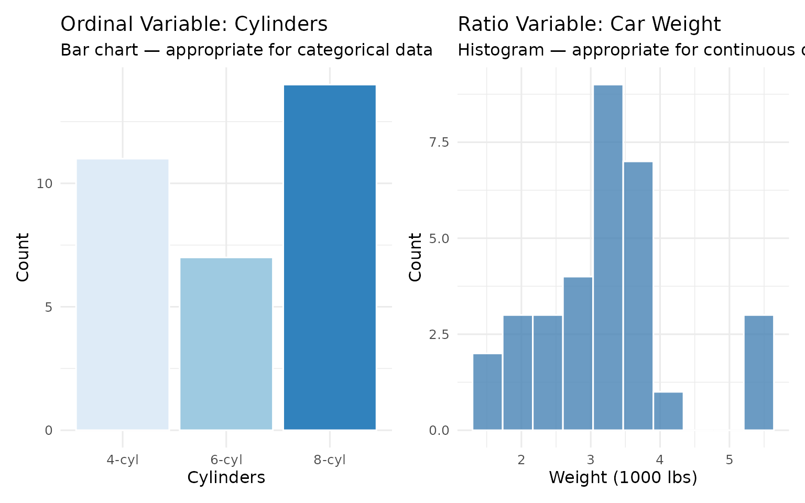
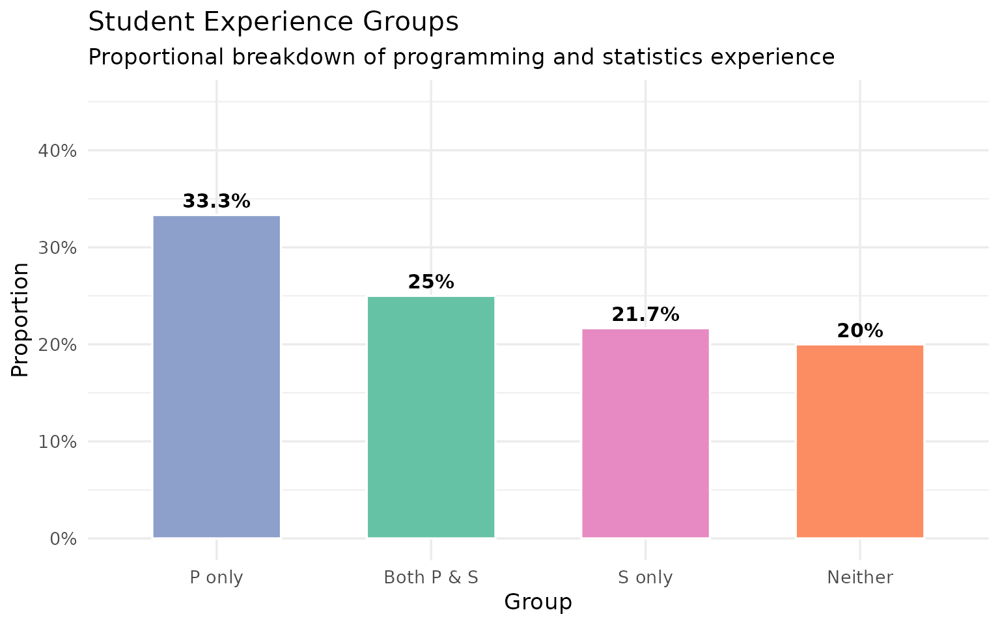
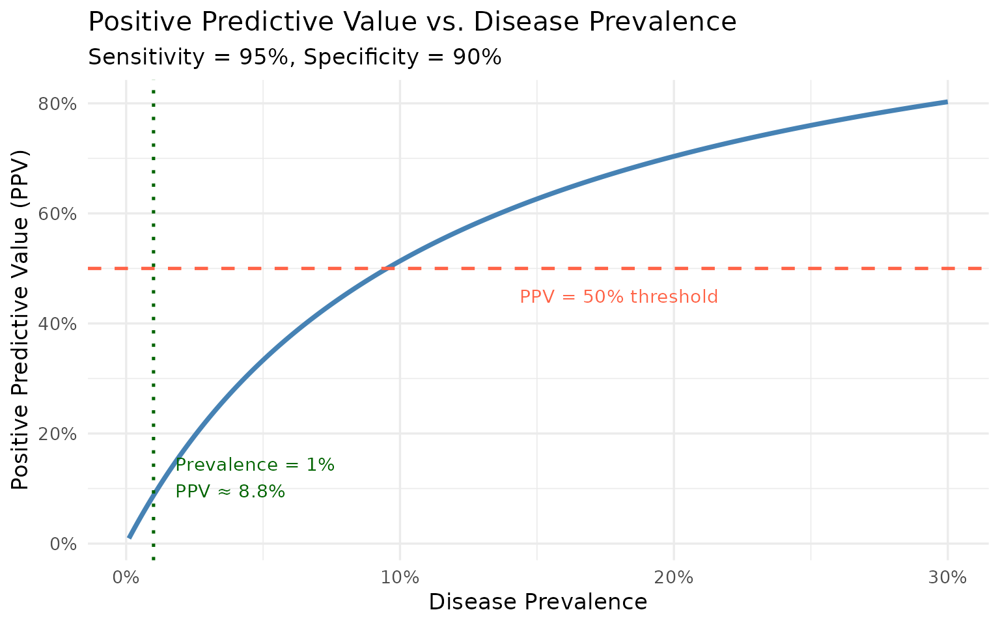
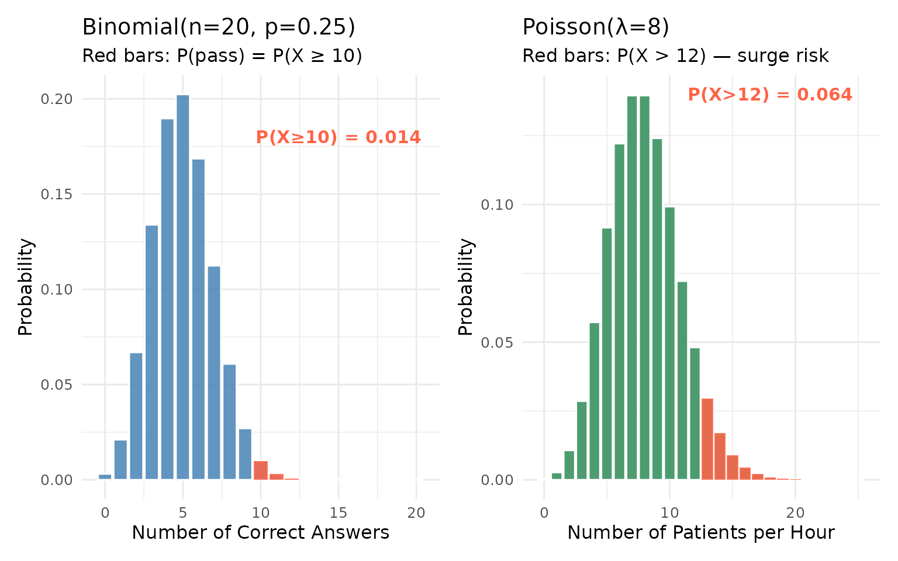
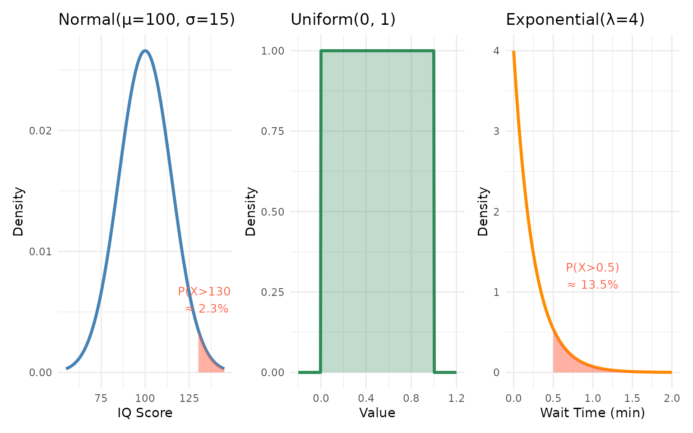
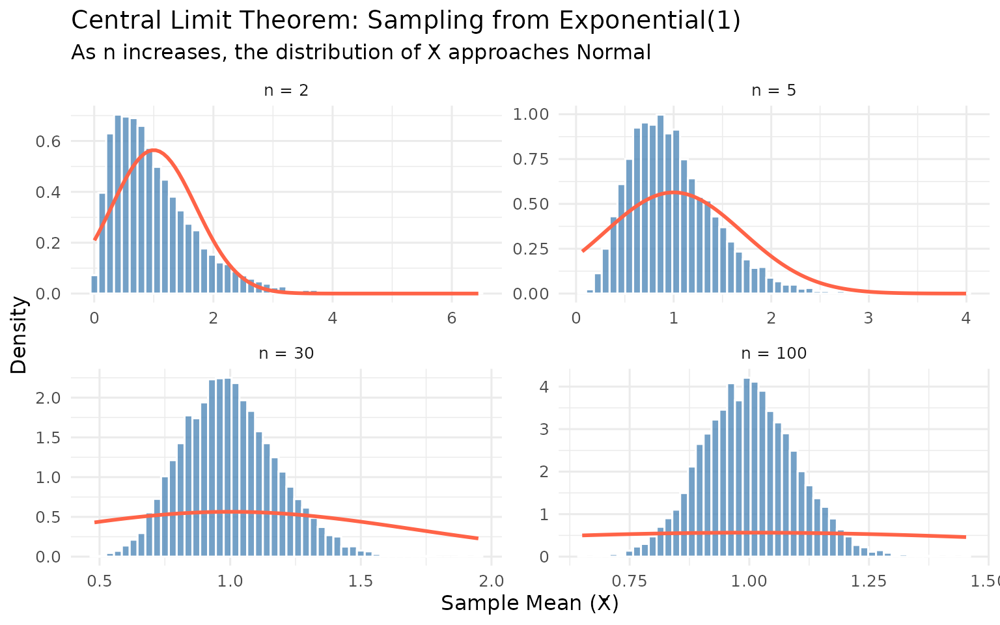
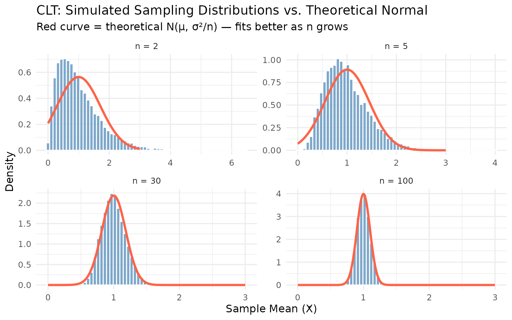
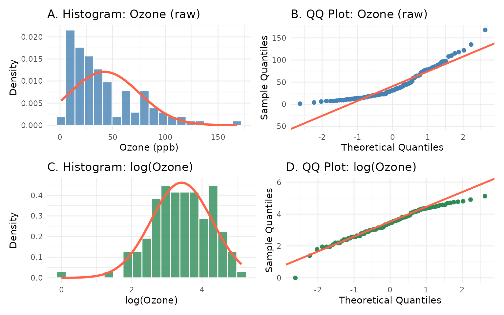
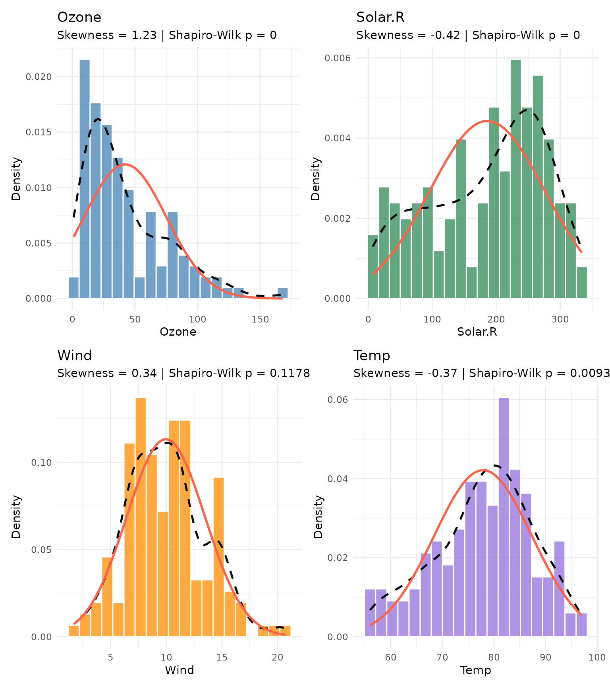

Show the R code
# Load all libraries needed for this chapter
library(tidyverse)
library(knitr)
library(kableExtra)
library(patchwork)
library(nortest) # normality tests (ad.test, lillie.test)# Load all libraries needed for this chapter
library(tidyverse)
library(knitr)
library(kableExtra)
library(patchwork)
library(nortest) # normality tests (ad.test, lillie.test)Understanding how data is distributed — and the probability rules that govern those distributions — is the theoretical backbone of all statistical inference. Before we can test hypotheses, build models, or make predictions, we must know what kind of data we have, what probability laws apply to it, and how random variation behaves.
This chapter covers:
By the end of this chapter, you will be able to:
Not all data is the same. A zip code, a temperature reading, a Likert-scale rating, and a weight measurement may all look like numbers — but they carry fundamentally different amounts of information and support different mathematical operations. Misidentifying the scale of measurement is one of the most common errors in data analysis, leading to inappropriate statistical methods and misleading conclusions.
The Stevens classification system (1946) organizes variables into four hierarchical levels of measurement, each building on the properties of the one before it.
Nominal variables classify observations into mutually exclusive, unordered categories. Numbers assigned to nominal categories are labels only — arithmetic operations are meaningless.
Ordinal variables have categories with a meaningful order or ranking, but the intervals between ranks are not necessarily equal.
Whether Likert-scale data can be treated as interval (and thus analyzed with means and parametric tests) is a long-standing debate in statistics. Many researchers treat 5- or 7-point Likert scales as approximately interval, particularly when summing multiple items into a composite score. Be prepared to justify your choice.
Interval variables have equal intervals between consecutive values, but there is no true zero point — zero does not mean “none of the quantity.”
Ratio variables possess all properties of interval scales plus a true zero point, meaning zero indicates the complete absence of the quantity. Ratios between values are meaningful.
| Scale | Order | Equal Intervals | True Zero | Examples | Key Statistics |
|---|---|---|---|---|---|
| Nominal | ✗ | ✗ | ✗ | Blood type, species | Mode, frequency |
| Ordinal | ✓ | ✗ | ✗ | Likert, rank | Median, percentile |
| Interval | ✓ | ✓ | ✗ | Temperature (°C), IQ | Mean, SD, correlation |
| Ratio | ✓ | ✓ | ✓ | Height, weight, income | All operations |
Independently of scale, variables are also classified as:
This distinction determines whether we use a probability mass function (discrete) or a probability density function (continuous) — covered in Sections 4 and 5.
Example 2.1. A health survey collects the following variables. Identify the measurement scale for each.
| Variable | Values Recorded | Scale | Justification |
|---|---|---|---|
| Patient ID | 001, 002, 003 | Nominal | Labels only; no order or arithmetic |
| Pain level | 1 (none) to 10 (severe) | Ordinal | Ordered, but intervals not guaranteed equal |
| Body temperature | 36.5°C, 37.2°C | Interval | Equal intervals; 0°C ≠ absence of temperature |
| Blood pressure | 120 mmHg, 80 mmHg | Ratio | True zero exists; 120 is twice 60 mmHg |
| Hospital ward | Ward A, Ward B | Nominal | Categories with no meaningful order |
| Recovery days | 3, 7, 14 | Ratio | True zero (0 days = no recovery needed) |
Key insight: Patient ID looks like a number but is nominal. Recovery days looks similar to pain level, but has a true zero. Always ask: Does zero mean “none of this”? and Are the intervals equal?
# --- Load a dataset and inspect variable types ---
data(mtcars)
# Check R's automatic type assignment
str(mtcars)'data.frame': 32 obs. of 11 variables:
$ mpg : num 21 21 22.8 21.4 18.7 18.1 14.3 24.4 22.8 19.2 ...
$ cyl : num 6 6 4 6 8 6 8 4 4 6 ...
$ disp: num 160 160 108 258 360 ...
$ hp : num 110 110 93 110 175 105 245 62 95 123 ...
$ drat: num 3.9 3.9 3.85 3.08 3.15 2.76 3.21 3.69 3.92 3.92 ...
$ wt : num 2.62 2.88 2.32 3.21 3.44 ...
$ qsec: num 16.5 17 18.6 19.4 17 ...
$ vs : num 0 0 1 1 0 1 0 1 1 1 ...
$ am : num 1 1 1 0 0 0 0 0 0 0 ...
$ gear: num 4 4 4 3 3 3 3 4 4 4 ...
$ carb: num 4 4 1 1 2 1 4 2 2 4 ...# --- Several variables in mtcars are stored as numeric
# but should be treated as categorical (nominal/ordinal)
# cyl: number of cylinders (4, 6, 8) — ordinal/nominal
# am: transmission type (0=auto, 1=manual) — nominal
# gear: number of gears — ordinal
# Convert to appropriate types
mtcars_clean <- mtcars |>
mutate(
cyl = factor(cyl, levels = c(4, 6, 8),
labels = c("4-cyl", "6-cyl", "8-cyl"),
ordered = TRUE), # ordinal
am = factor(am, levels = c(0, 1),
labels = c("Automatic", "Manual")), # nominal
gear = factor(gear, levels = c(3, 4, 5),
ordered = TRUE) # ordinal
)
# Inspect the corrected structure
str(mtcars_clean)'data.frame': 32 obs. of 11 variables:
$ mpg : num 21 21 22.8 21.4 18.7 18.1 14.3 24.4 22.8 19.2 ...
$ cyl : Ord.factor w/ 3 levels "4-cyl"<"6-cyl"<..: 2 2 1 2 3 2 3 1 1 2 ...
$ disp: num 160 160 108 258 360 ...
$ hp : num 110 110 93 110 175 105 245 62 95 123 ...
$ drat: num 3.9 3.9 3.85 3.08 3.15 2.76 3.21 3.69 3.92 3.92 ...
$ wt : num 2.62 2.88 2.32 3.21 3.44 ...
$ qsec: num 16.5 17 18.6 19.4 17 ...
$ vs : num 0 0 1 1 0 1 0 1 1 1 ...
$ am : Factor w/ 2 levels "Automatic","Manual": 2 2 2 1 1 1 1 1 1 1 ...
$ gear: Ord.factor w/ 3 levels "3"<"4"<"5": 2 2 2 1 1 1 1 2 2 2 ...
$ carb: num 4 4 1 1 2 1 4 2 2 4 ...# --- Visualize appropriate to scale ---
# Nominal/Ordinal: bar chart (NOT histogram — no meaningful continuity)
p1 <- ggplot(mtcars_clean, aes(x = cyl, fill = cyl)) +
geom_bar(color = "white") +
scale_fill_brewer(palette = "Blues") +
labs(title = "Ordinal Variable: Cylinders",
subtitle = "Bar chart — appropriate for categorical data",
x = "Cylinders", y = "Count") +
theme_minimal(base_size = 12) +
theme(legend.position = "none")
# Ratio: histogram (continuous, true zero)
p2 <- ggplot(mtcars_clean, aes(x = wt)) +
geom_histogram(bins = 10, fill = "steelblue",
color = "white", alpha = 0.8) +
labs(title = "Ratio Variable: Car Weight",
subtitle = "Histogram — appropriate for continuous data",
x = "Weight (1000 lbs)", y = "Count") +
theme_minimal(base_size = 12)
p1 + p2
Code explanation:
factor(..., ordered = TRUE) creates an ordered factor in R, correctly representing ordinal data.str() reveals how R internally stores each variable — a critical first step in any analysis.Try modifying: Use class() and levels() on the converted variables to confirm their types and order.
For each variable below, identify: (a) the measurement scale, (b) whether it is discrete or continuous, and (c) the most appropriate graph type.
Load the iris dataset in R. For each of the five variables, identify the measurement scale. Convert any variables that are incorrectly stored in R to their appropriate type using factor(). Justify each decision.
Probability is the mathematical framework for reasoning under uncertainty. Every time a data scientist makes a prediction, estimates a parameter, or runs a hypothesis test, they are implicitly using probability theory. Understanding the foundational rules — not just the formulas — is essential for building correct intuition about statistical methods.
A random experiment is any process whose outcome is uncertain. The sample space \(S\) is the set of all possible outcomes. An event \(A\) is any subset of the sample space.
\[S = \{\text{all possible outcomes}\}, \qquad A \subseteq S\]
Example: Rolling a six-sided die: \(S = \{1, 2, 3, 4, 5, 6\}\). The event “rolling an even number” is \(A = \{2, 4, 6\}\).
All of probability theory rests on three axioms proposed by Andrey Kolmogorov in 1933:
From these three axioms, all other probability rules are derived.
Complement Rule: \[P(A^c) = 1 - P(A)\]
Addition Rule (for any two events): \[P(A \cup B) = P(A) + P(B) - P(A \cap B)\]
Multiplication Rule (for independent events \(A \perp B\)): \[P(A \cap B) = P(A) \cdot P(B)\]
Law of Total Probability: If \(B_1, B_2, \ldots, B_k\) partition the sample space: \[P(A) = \sum_{i=1}^{k} P(A \mid B_i) \cdot P(B_i)\]
Two schools of thought define what a probability means:
| Interpretation | Definition | Use Case |
|---|---|---|
| Frequentist | Long-run relative frequency in repeated trials | Classical hypothesis testing |
| Bayesian | Degree of belief, updated as evidence arrives | Bayesian inference, machine learning |
Both interpretations are mathematically consistent with Kolmogorov’s axioms — they differ in meaning, not in the rules.
Example 2.2. A data science program has 60 students. From records: 35 have programming experience (P), 28 have statistics experience (S), and 15 have both.
Find: (a) \(P(P \cup S)\), (b) \(P(\text{neither})\), (c) \(P(P \text{ only})\)
Step 1 — Convert to probabilities: \[P(P) = \frac{35}{60} \approx 0.583, \quad P(S) = \frac{28}{60} \approx 0.467, \quad P(P \cap S) = \frac{15}{60} = 0.25\]
(a) Addition Rule: \[P(P \cup S) = 0.583 + 0.467 - 0.25 = 0.80\]
So 80% of students have at least one type of experience.
(b) Complement Rule: \[P(\text{neither}) = 1 - P(P \cup S) = 1 - 0.80 = 0.20\]
20% of students have neither programming nor statistics experience.
(c) P only (programming but not statistics): \[P(P \cap S^c) = P(P) - P(P \cap S) = 0.583 - 0.25 = 0.333\]
# --- Simulate probability with repeated experiments ---
# Verify the Addition Rule via simulation
set.seed(123)
n_trials <- 100000
# Simulate 60-student cohorts: each student gets P and S independently
# P(P) = 35/60, P(S) = 28/60, P(P and S) = 15/60
# We'll simulate individual student memberships
p_prog <- 35 / 60
p_stats <- 28 / 60
p_both <- 15 / 60
# Simulate events for each trial
has_prog <- runif(n_trials) < p_prog
has_stats <- runif(n_trials) < p_stats
# Correct for the joint probability (to match P(P∩S) = 15/60)
# Use the conditional: P(S|P) = 15/35
has_stats_given_prog <- runif(n_trials) < (p_both / p_prog)
has_both <- has_prog & has_stats_given_prog
has_stats_not_prog <- (!has_prog) & (runif(n_trials) < ((p_stats - p_both) / (1 - p_prog)))
has_stats_final <- has_both | has_stats_not_prog
# Compute simulated probabilities
sim_results <- data.frame(
Event = c("P(Programming)", "P(Statistics)",
"P(Both)", "P(At least one)", "P(Neither)"),
Theoretical = c(35/60, 28/60, 15/60, 0.80, 0.20),
Simulated = c(
mean(has_prog),
mean(has_stats_final),
mean(has_both),
mean(has_prog | has_stats_final),
mean(!has_prog & !has_stats_final)
)
)
sim_results[, 2:3] <- round(sim_results[, 2:3], 4)
kable(sim_results,
caption = "Theoretical vs. Simulated Probabilities (100,000 trials)",
col.names = c("Event", "Theoretical", "Simulated")) |>
kable_styling(bootstrap_options = c("striped", "hover"), full_width = FALSE)| Event | Theoretical | Simulated |
|---|---|---|
| P(Programming) | 0.5833 | 0.5847 |
| P(Statistics) | 0.4667 | 0.4648 |
| P(Both) | 0.2500 | 0.2505 |
| P(At least one) | 0.8000 | 0.7990 |
| P(Neither) | 0.2000 | 0.2010 |
# --- Visualize with a proportional bar chart (Venn alternative) ---
event_df <- data.frame(
Group = c("P only", "S only", "Both P & S", "Neither"),
Count = c(20, 13, 15, 12),
Proportion = c(20/60, 13/60, 15/60, 12/60)
)
ggplot(event_df, aes(x = reorder(Group, -Proportion),
y = Proportion, fill = Group)) +
geom_col(color = "white", width = 0.6) +
geom_text(aes(label = paste0(round(Proportion * 100, 1), "%")),
vjust = -0.5, size = 4, fontface = "bold") +
scale_fill_brewer(palette = "Set2") +
scale_y_continuous(labels = scales::percent, limits = c(0, 0.45)) +
labs(title = "Student Experience Groups",
subtitle = "Proportional breakdown of programming and statistics experience",
x = "Group", y = "Proportion") +
theme_minimal(base_size = 13) +
theme(legend.position = "none")
Code explanation:
runif(n_trials) generates uniform random numbers between 0 and 1; comparing to a probability threshold simulates Bernoulli trials.set.seed(123) ensures reproducibility — always set a seed when using random number generators.A quality control inspector examines products from two machines. Machine A produces 60% of output with a 3% defect rate. Machine B produces 40% with a 5% defect rate.
Using the sample() function in R, simulate rolling two fair dice 10,000 times.
In practice, we rarely ask about probabilities in a vacuum. We ask: Given that a patient tested positive, what is the probability they actually have the disease? Or: Given that a customer clicked an ad, what is the probability they will purchase? Conditional probability formalizes how information about one event changes our assessment of another. Bayes’ Theorem takes this further, providing a rigorous method for updating beliefs in light of new evidence — the foundation of Bayesian statistics and many machine learning algorithms.
The conditional probability of event \(A\) given that event \(B\) has occurred is:
\[P(A \mid B) = \frac{P(A \cap B)}{P(B)}, \qquad \text{provided } P(B) > 0\]
Intuitively, we restrict our universe to the world where \(B\) has already happened, and ask what fraction of that restricted world includes \(A\).
Independence is a special case: \(A\) and \(B\) are independent if and only if: \[P(A \mid B) = P(A) \qquad \Longleftrightarrow \qquad P(A \cap B) = P(A) \cdot P(B)\]
Bayes’ Theorem inverts conditional probabilities — it tells us \(P(A \mid B)\) when we know \(P(B \mid A)\):
\[P(A \mid B) = \frac{P(B \mid A) \cdot P(A)}{P(B)}\]
Expanding the denominator using the Law of Total Probability:
\[P(A \mid B) = \frac{P(B \mid A) \cdot P(A)}{P(B \mid A) \cdot P(A) + P(B \mid A^c) \cdot P(A^c)}\]
In Bayesian language:
| Term | Name | Meaning |
|---|---|---|
| \(P(A)\) | Prior | Belief about \(A\) before seeing evidence \(B\) |
| \(P(B \mid A)\) | Likelihood | Probability of the evidence if \(A\) is true |
| \(P(B)\) | Marginal likelihood | Total probability of the evidence |
| \(P(A \mid B)\) | Posterior | Updated belief after seeing evidence \(B\) |
In medical testing and classification, Bayes’ Theorem connects several important metrics:
\[\text{PPV} = \frac{\text{Sensitivity} \times \text{Prevalence}}{\text{Sensitivity} \times \text{Prevalence} + (1 - \text{Specificity}) \times (1 - \text{Prevalence})}\]
Example 2.3. A disease affects 1% of the population (prevalence = 0.01). A diagnostic test has:
Question: If a patient tests positive, what is the probability they actually have the disease?
Step 1 — Prior: \(P(D) = 0.01\), \(P(D^c) = 0.99\)
Step 2 — Marginal probability of a positive test: \[P(\text{Test}^+) = P(\text{Test}^+ \mid D) \cdot P(D) + P(\text{Test}^+ \mid D^c) \cdot P(D^c)\] \[= (0.95)(0.01) + (0.10)(0.99) = 0.0095 + 0.099 = 0.1085\]
Step 3 — Posterior (PPV): \[P(D \mid \text{Test}^+) = \frac{(0.95)(0.01)}{0.1085} = \frac{0.0095}{0.1085} \approx 0.0876\]
Interpretation: Despite a positive test, there is only an 8.76% chance the patient actually has the disease. This counterintuitive result — known as the base rate fallacy — occurs because the disease is rare (1%) and the false positive rate (10%) is not negligible. Prevalence (the prior) matters enormously in diagnostic settings.
# --- Bayes' Theorem function ---
bayes_ppv <- function(sensitivity, specificity, prevalence) {
p_pos_given_d <- sensitivity
p_pos_given_nd <- 1 - specificity
p_d <- prevalence
p_nd <- 1 - prevalence
p_pos <- p_pos_given_d * p_d + p_pos_given_nd * p_nd
ppv <- (p_pos_given_d * p_d) / p_pos
npv <- (specificity * p_nd) / (1 - p_pos)
cat("=== Bayes' Theorem: Diagnostic Test ===\n")
cat("Sensitivity: ", sensitivity, "\n")
cat("Specificity: ", specificity, "\n")
cat("Prevalence: ", prevalence, "\n")
cat("P(Test+): ", round(p_pos, 4), "\n")
cat("PPV (P(D|Test+)): ", round(ppv, 4), "\n")
cat("NPV (P(D^c|Test-)): ", round(npv, 4), "\n")
}
# Run for the example
bayes_ppv(sensitivity = 0.95, specificity = 0.90, prevalence = 0.01)=== Bayes' Theorem: Diagnostic Test ===
Sensitivity: 0.95
Specificity: 0.9
Prevalence: 0.01
P(Test+): 0.1085
PPV (P(D|Test+)): 0.0876
NPV (P(D^c|Test-)): 0.9994 # --- How does PPV change as prevalence changes? ---
prevalence_seq <- seq(0.001, 0.30, by = 0.001)
ppv_values <- sapply(prevalence_seq, function(prev) {
p_pos <- 0.95 * prev + 0.10 * (1 - prev)
(0.95 * prev) / p_pos
})
ppv_df <- data.frame(prevalence = prevalence_seq, ppv = ppv_values)
ggplot(ppv_df, aes(x = prevalence, y = ppv)) +
geom_line(color = "steelblue", linewidth = 1.3) +
geom_hline(yintercept = 0.50, linetype = "dashed",
color = "tomato", linewidth = 0.9) +
geom_vline(xintercept = 0.01, linetype = "dotted",
color = "darkgreen", linewidth = 0.9) +
annotate("text", x = 0.018, y = 0.12,
label = "Prevalence = 1%\nPPV ≈ 8.8%",
color = "darkgreen", size = 3.8, hjust = 0) +
annotate("text", x = 0.18, y = 0.45,
label = "PPV = 50% threshold",
color = "tomato", size = 3.8) +
scale_x_continuous(labels = scales::percent) +
scale_y_continuous(labels = scales::percent) +
labs(title = "Positive Predictive Value vs. Disease Prevalence",
subtitle = "Sensitivity = 95%, Specificity = 90%",
x = "Disease Prevalence",
y = "Positive Predictive Value (PPV)") +
theme_minimal(base_size = 13)
Code explanation:
bayes_ppv() is a reusable function that takes sensitivity, specificity, and prevalence as arguments — you can apply it to any diagnostic scenario.sapply() applies the PPV computation across a vector of prevalence values, enabling the sensitivity curve.Try modifying: Change specificity to 0.99 and observe how PPV improves at low prevalence. This illustrates why high specificity matters so much for screening rare conditions.
A spam filter has sensitivity = 0.98 (correctly identifies spam) and specificity = 0.95 (correctly identifies legitimate email). In a typical inbox, 20% of emails are spam.
A factory uses two independent tests to detect a defect (prevalence = 5%). Test 1: sensitivity = 0.90, specificity = 0.85. Test 2: sensitivity = 0.85, specificity = 0.92. A product is flagged only if both tests are positive.
A probability distribution is a mathematical function that assigns probabilities to all possible values of a random variable. For discrete random variables — those that take countable values — the distribution is described by a probability mass function (PMF). In data science, discrete distributions model count data, binary outcomes, and rare events. Two distributions are fundamental: the Binomial (fixed trials with two outcomes) and the Poisson (counts of rare events over an interval).
The Binomial distribution \(X \sim \text{Binomial}(n, p)\) models the number of successes in \(n\) independent trials, each with success probability \(p\).
PMF: \[P(X = k) = \binom{n}{k} p^k (1-p)^{n-k}, \qquad k = 0, 1, \ldots, n\]
where \(\binom{n}{k} = \frac{n!}{k!(n-k)!}\) is the binomial coefficient (number of ways to choose \(k\) from \(n\)).
Key properties:
| Property | Formula |
|---|---|
| Mean | \(\mu = np\) |
| Variance | \(\sigma^2 = np(1-p)\) |
| Standard Deviation | \(\sigma = \sqrt{np(1-p)}\) |
Assumptions: Fixed \(n\), constant \(p\), independent trials, binary outcome (success/failure).
The Poisson distribution \(X \sim \text{Poisson}(\lambda)\) models the number of events occurring in a fixed interval of time or space, when events occur independently at a constant average rate \(\lambda\).
PMF: \[P(X = k) = \frac{e^{-\lambda} \lambda^k}{k!}, \qquad k = 0, 1, 2, \ldots\]
Key properties:
| Property | Formula |
|---|---|
| Mean | \(\mu = \lambda\) |
| Variance | \(\sigma^2 = \lambda\) |
| Standard Deviation | \(\sigma = \sqrt{\lambda}\) |
Note that in the Poisson distribution, the mean equals the variance — a useful diagnostic. If observed count data shows variance much larger than the mean, overdispersion is present and a negative binomial model may be more appropriate.
Poisson as approximation to Binomial: When \(n\) is large and \(p\) is small (rare events), Binomial\((n, p) \approx\) Poisson\((\lambda = np)\).
Example 2.4 — Binomial. A multiple-choice exam has 20 questions, each with 4 options. A student guesses randomly on every question. Let \(X\) = number of correct answers.
\(X \sim \text{Binomial}(n = 20, p = 0.25)\)
Probability of passing (at least 10 correct): \[P(X \geq 10) = 1 - P(X \leq 9) = 1 - \sum_{k=0}^{9} \binom{20}{k}(0.25)^k(0.75)^{20-k} \approx 0.014\]
There is only a 1.4% chance of passing by pure guessing.
Example 2.5 — Poisson. A hospital emergency room receives an average of 8 patients per hour. Let \(X\) = number of patients in the next hour.
\(X \sim \text{Poisson}(\lambda = 8)\)
# === BINOMIAL DISTRIBUTION ===
# X ~ Binomial(n=20, p=0.25)
n <- 20; p <- 0.25
x_binom <- 0:n
# PMF and CDF
binom_df <- data.frame(
x = x_binom,
pmf = dbinom(x_binom, size = n, prob = p),
cdf = pbinom(x_binom, size = n, prob = p)
)
# Probability of passing (X >= 10)
p_pass <- 1 - pbinom(9, size = n, prob = p)
cat("Binomial(20, 0.25):\n")Binomial(20, 0.25):cat(" Mean: ", n * p, "\n") Mean: 5 cat(" Variance: ", n * p * (1-p), "\n") Variance: 3.75 cat(" P(X >= 10) [pass]: ", round(p_pass, 4), "\n\n") P(X >= 10) [pass]: 0.0139 # === POISSON DISTRIBUTION ===
# X ~ Poisson(lambda = 8)
lambda <- 8
x_pois <- 0:25
pois_df <- data.frame(
x = x_pois,
pmf = dpois(x_pois, lambda = lambda),
cdf = ppois(x_pois, lambda = lambda)
)
p_gt12 <- 1 - ppois(12, lambda = lambda)
cat("Poisson(lambda = 8):\n")Poisson(lambda = 8):cat(" Mean = Variance: ", lambda, "\n") Mean = Variance: 8 cat(" P(X = 10): ", round(dpois(10, lambda), 4), "\n") P(X = 10): 0.0993 cat(" P(X > 12): ", round(p_gt12, 4), "\n") P(X > 12): 0.0638 # --- Plot both PMFs side by side ---
p1 <- ggplot(binom_df, aes(x = x, y = pmf)) +
geom_col(fill = "steelblue", color = "white", alpha = 0.85) +
geom_col(data = subset(binom_df, x >= 10),
aes(x = x, y = pmf), fill = "tomato", alpha = 0.85) +
annotate("text", x = 15, y = 0.18,
label = paste0("P(X≥10) = ", round(p_pass, 3)),
color = "tomato", fontface = "bold", size = 4) +
labs(title = "Binomial(n=20, p=0.25)",
subtitle = "Red bars: P(pass) = P(X ≥ 10)",
x = "Number of Correct Answers",
y = "Probability") +
theme_minimal(base_size = 12)
p2 <- ggplot(pois_df, aes(x = x, y = pmf)) +
geom_col(fill = "seagreen", color = "white", alpha = 0.85) +
geom_col(data = subset(pois_df, x > 12),
aes(x = x, y = pmf), fill = "tomato", alpha = 0.85) +
annotate("text", x = 18, y = 0.14,
label = paste0("P(X>12) = ", round(p_gt12, 3)),
color = "tomato", fontface = "bold", size = 4) +
labs(title = "Poisson(λ=8)",
subtitle = "Red bars: P(X > 12) — surge risk",
x = "Number of Patients per Hour",
y = "Probability") +
theme_minimal(base_size = 12)
p1 + p2
Code explanation:
dbinom(x, size, prob) computes the PMF (exact probability at each value); pbinom() computes the CDF (cumulative probability up to and including \(x\)).dpois(x, lambda) and ppois(x, lambda) are the Poisson equivalents.subset() inside a second geom_col()) draws attention to the probability region of interest — a technique useful in reports and teaching.A new medical treatment is effective in 70% of patients. In a clinical trial of 15 patients:
Website traffic follows a Poisson process with an average of 5 visits per minute.
When a random variable can take any value within a continuous range, we describe its distribution using a probability density function (PDF) \(f(x)\). Unlike a PMF, the PDF does not give the probability at a single point (which is always zero for continuous variables) — instead, probabilities are areas under the curve:
\[P(a \leq X \leq b) = \int_a^b f(x)\, dx\]
Three continuous distributions are essential foundations in data science: the Normal, the Uniform, and the Exponential.
\(X \sim N(\mu, \sigma^2)\) is the most important distribution in statistics. Its symmetric, bell-shaped PDF is:
\[f(x) = \frac{1}{\sigma\sqrt{2\pi}} \exp\!\left(-\frac{(x-\mu)^2}{2\sigma^2}\right), \qquad -\infty < x < \infty\]
The standard normal \(Z \sim N(0, 1)\) is obtained by standardizing: \(Z = (X - \mu)/\sigma\).
Empirical Rule (68-95-99.7 rule):
\[P(\mu - \sigma \leq X \leq \mu + \sigma) \approx 0.6827\] \[P(\mu - 2\sigma \leq X \leq \mu + 2\sigma) \approx 0.9545\] \[P(\mu - 3\sigma \leq X \leq \mu + 3\sigma) \approx 0.9973\]
\(X \sim \text{Uniform}(a, b)\) assigns equal probability density to every value between \(a\) and \(b\):
\[f(x) = \frac{1}{b-a}, \quad a \leq x \leq b\]
Mean: \(\mu = \frac{a+b}{2}\), Variance: \(\sigma^2 = \frac{(b-a)^2}{12}\)
The Uniform distribution is used in random number generation, simulation, and as a non-informative (flat) prior in Bayesian analysis.
\(X \sim \text{Exponential}(\lambda)\) models the waiting time between consecutive Poisson events:
\[f(x) = \lambda e^{-\lambda x}, \quad x \geq 0\]
Mean: \(\mu = 1/\lambda\), Variance: \(\sigma^2 = 1/\lambda^2\)
The exponential distribution has the memoryless property: \(P(X > s + t \mid X > s) = P(X > t)\). The future waiting time does not depend on how long you have already waited — relevant for modelling system failures, service times, and inter-arrival times.
Example 2.6 — Normal. IQ scores are distributed as \(N(\mu = 100, \sigma^2 = 15^2)\).
(a) \(P(85 \leq X \leq 115)\) — within one standard deviation: By the empirical rule \(\approx 68.27\%\). Exact: \(P(-1 \leq Z \leq 1) = 0.6827\).
(b) \(P(X > 130)\) — probability of “gifted” range: \[Z = \frac{130 - 100}{15} = 2.0 \qquad P(X > 130) = P(Z > 2) = 1 - 0.9772 = 0.0228\]
About 2.3% of the population has IQ above 130.
Example 2.7 — Exponential. A server processes requests at a rate of \(\lambda = 4\) per minute (mean waiting time = 15 seconds = 0.25 minutes).
\(P(X > 0.5) = e^{-4 \times 0.5} = e^{-2} \approx 0.135\) — 13.5% chance of waiting more than 30 seconds.
# === NORMAL DISTRIBUTION ===
mu <- 100; sigma <- 15
# Empirical rule verification
p_1sd <- pnorm(mu + sigma, mu, sigma) - pnorm(mu - sigma, mu, sigma)
p_2sd <- pnorm(mu + 2*sigma, mu, sigma) - pnorm(mu - 2*sigma, mu, sigma)
p_gt130 <- 1 - pnorm(130, mu, sigma)
cat("Normal(mu=100, sigma=15):\n")Normal(mu=100, sigma=15):cat(" P(within 1 SD): ", round(p_1sd, 4), "\n") P(within 1 SD): 0.6827 cat(" P(within 2 SD): ", round(p_2sd, 4), "\n") P(within 2 SD): 0.9545 cat(" P(IQ > 130): ", round(p_gt130, 4), "\n\n") P(IQ > 130): 0.0228 # === EXPONENTIAL DISTRIBUTION ===
lambda_exp <- 4 # rate = 4 per minute
p_wait_gt30sec <- 1 - pexp(0.5, rate = lambda_exp)
cat("Exponential(lambda=4 per min):\n")Exponential(lambda=4 per min):cat(" Mean wait time (min): ", 1/lambda_exp, "\n") Mean wait time (min): 0.25 cat(" P(wait > 30 sec): ", round(p_wait_gt30sec, 4), "\n") P(wait > 30 sec): 0.1353 # --- Plot all three distributions ---
x_norm <- seq(55, 145, length.out = 300)
x_unif <- seq(-0.2, 1.2, length.out = 300)
x_exp <- seq(0, 2, length.out = 300)
# Normal
norm_df <- data.frame(x = x_norm, y = dnorm(x_norm, 100, 15),
shade = x_norm >= 130)
p1 <- ggplot(norm_df, aes(x, y)) +
geom_line(color = "steelblue", linewidth = 1.2) +
geom_area(data = subset(norm_df, shade),
fill = "tomato", alpha = 0.5) +
annotate("text", x = 135, y = 0.006,
label = "P(X>130)\n≈ 2.3%", color = "tomato", size = 3.5) +
labs(title = "Normal(μ=100, σ=15)",
x = "IQ Score", y = "Density") +
theme_minimal(base_size = 11)
# Uniform
unif_df <- data.frame(x = x_unif,
y = dunif(x_unif, min = 0, max = 1))
p2 <- ggplot(unif_df, aes(x, y)) +
geom_line(color = "seagreen", linewidth = 1.2) +
geom_area(data = subset(unif_df, x >= 0 & x <= 1),
fill = "seagreen", alpha = 0.3) +
labs(title = "Uniform(0, 1)",
x = "Value", y = "Density") +
theme_minimal(base_size = 11)
# Exponential
exp_df <- data.frame(x = x_exp, y = dexp(x_exp, rate = 4),
shade = x_exp > 0.5)
p3 <- ggplot(exp_df, aes(x, y)) +
geom_line(color = "darkorange", linewidth = 1.2) +
geom_area(data = subset(exp_df, shade),
fill = "tomato", alpha = 0.5) +
annotate("text", x = 1, y = 1.2,
label = "P(X>0.5)\n≈ 13.5%", color = "tomato", size = 3.5) +
labs(title = "Exponential(λ=4)",
x = "Wait Time (min)", y = "Density") +
theme_minimal(base_size = 11)
p1 + p2 + p3
Code explanation:
dnorm(), dunif(), dexp() compute the PDF (density) — used for plotting the curve.pnorm(), punif(), pexp() compute the CDF (cumulative probability) — used for probability calculations.qnorm(), qunif(), qexp() compute quantiles (inverse CDF) — used to find critical values.Heights of adult males in a population follow \(N(\mu = 175\text{ cm}, \sigma^2 = 6.25^2)\).
A call center receives calls at a rate of 12 per hour (Poisson process).
In practice, we observe a sample and wish to draw conclusions about the population. The key bridge between sample and population is the concept of a sampling distribution — the probability distribution of a statistic (like the sample mean) computed from all possible samples of size \(n\). Understanding sampling distributions, and especially the Central Limit Theorem (CLT), is what makes inference possible and explains why the normal distribution appears so ubiquitously in statistics.
Suppose we draw a random sample \(X_1, X_2, \ldots, X_n\) from a population with mean \(\mu\) and variance \(\sigma^2\). The sample mean is: \[\bar{X} = \frac{1}{n}\sum_{i=1}^n X_i\]
The sampling distribution of \(\bar{X}\) has:
\[E[\bar{X}] = \mu \qquad \text{(unbiased)}\] \[\text{Var}(\bar{X}) = \frac{\sigma^2}{n} \qquad \text{(variance decreases with sample size)}\] \[\text{SE}(\bar{X}) = \frac{\sigma}{\sqrt{n}} \qquad \text{(standard error)}\]
Let \(X_1, X_2, \ldots, X_n\) be independent and identically distributed random variables from any distribution with mean \(\mu\) and finite variance \(\sigma^2\). Then as \(n \to \infty\):
\[\frac{\bar{X} - \mu}{\sigma / \sqrt{n}} \xrightarrow{d} N(0, 1)\]
The standardized sample mean converges in distribution to the standard normal, regardless of the shape of the original population distribution.
Practical rule of thumb: For most distributions, \(n \geq 30\) is sufficient for the normal approximation to be reliable. For highly skewed distributions, larger \(n\) may be needed.
Why this matters: The CLT justifies the use of \(z\)-tests and \(t\)-tests even when the population is not normal, provided the sample is large enough. It explains why the normal distribution appears so frequently in real data — many measurements are averages or sums of numerous independent contributions.
When \(\sigma\) is unknown (always in practice) and we substitute the sample standard deviation \(s\), the standardized mean follows a Student’s \(t\)-distribution with \(n-1\) degrees of freedom:
\[T = \frac{\bar{X} - \mu}{s / \sqrt{n}} \sim t(n-1)\]
The \(t\)-distribution is symmetric and bell-shaped like the normal, but has heavier tails — reflecting the additional uncertainty from estimating \(\sigma\). As \(n \to \infty\), \(t(n-1) \to N(0,1)\).
Example 2.8. Consider sampling from a highly skewed Exponential(1) distribution (\(\mu = 1\), \(\sigma = 1\)). The CLT predicts that for large \(n\), the sampling distribution of \(\bar{X}\) will be approximately \(N(1, 1/n)\).
We verify this empirically by taking 10,000 samples of size \(n = 2, 5, 30, 100\) and examining the distribution of sample means. As \(n\) grows, the histogram of \(\bar{X}\) becomes increasingly bell-shaped, regardless of the skewed parent distribution.
# --- CLT Demonstration ---
# Parent distribution: Exponential(rate=1) — highly right-skewed
set.seed(42)
n_samples <- 10000
sample_sizes <- c(2, 5, 30, 100)
# Function: draw n_samples means of size n
get_means <- function(n, n_samp = 10000) {
replicate(n_samp, mean(rexp(n, rate = 1)))
}
# Collect sample means for each sample size
clt_df <- map_dfr(sample_sizes, function(n) {
data.frame(
sample_size = paste0("n = ", n),
xbar = get_means(n)
)
})
clt_df$sample_size <- factor(clt_df$sample_size,
levels = paste0("n = ", sample_sizes))
# --- Plot ---
ggplot(clt_df, aes(x = xbar)) +
geom_histogram(aes(y = after_stat(density)),
bins = 50, fill = "steelblue",
color = "white", alpha = 0.75) +
stat_function(fun = dnorm,
args = list(mean = 1, sd = 1 / sqrt(as.numeric(
gsub("n = ", "", clt_df$sample_size[1])))),
color = "tomato", linewidth = 1) +
facet_wrap(~sample_size, scales = "free", ncol = 2) +
labs(title = "Central Limit Theorem: Sampling from Exponential(1)",
subtitle = "As n increases, the distribution of X̄ approaches Normal",
x = "Sample Mean (X̄)", y = "Density") +
theme_minimal(base_size = 12)
# --- Overlay theoretical normal for each panel ---
clt_summary <- clt_df |>
mutate(n_val = as.numeric(gsub("n = ", "", sample_size))) |>
group_by(sample_size, n_val) |>
summarise(.groups = "drop")
# Better approach: compute theoretical curves per panel
norm_curves <- map_dfr(sample_sizes, function(n) {
x_seq <- seq(0, 3, length.out = 300)
data.frame(
sample_size = paste0("n = ", n),
x = x_seq,
y = dnorm(x_seq, mean = 1, sd = 1 / sqrt(n))
)
})
norm_curves$sample_size <- factor(norm_curves$sample_size,
levels = paste0("n = ", sample_sizes))
ggplot(clt_df, aes(x = xbar)) +
geom_histogram(aes(y = after_stat(density)),
bins = 60, fill = "steelblue",
color = "white", alpha = 0.7) +
geom_line(data = norm_curves, aes(x = x, y = y),
color = "tomato", linewidth = 1.2) +
facet_wrap(~sample_size, scales = "free", ncol = 2) +
labs(title = "CLT: Simulated Sampling Distributions vs. Theoretical Normal",
subtitle = "Red curve = theoretical N(μ, σ²/n) — fits better as n grows",
x = "Sample Mean (X̄)", y = "Density") +
theme_minimal(base_size = 12)
Code explanation:
replicate(n_samp, mean(rexp(n, rate=1))) is the core simulation: repeat n_samp times, drawing a sample of size n from an Exponential distribution and computing its mean.map_dfr() from purrr (loaded via tidyverse) applies a function across a vector and row-binds the results into a data frame — a clean alternative to a for loop.norm_curves data frame computes the theoretical normal PDF for each panel, enabling correct overlay across facets with different scales.A population of exam scores has \(\mu = 72\) and \(\sigma = 14\) (distribution unknown).
Many statistical tests — including \(t\)-tests, ANOVA, linear regression residual diagnostics, and Pearson correlation — assume that the data (or the residuals) are approximately normally distributed. Assessing normality is therefore a critical step in any data analysis workflow, not a formality. In this section, we cover both graphical methods (visual, flexible) and formal statistical tests (objective, sample-size dependent), and discuss how to interpret their results in practice.
Histogram with normal curve overlay: A histogram compared to the shape of a normal distribution provides an intuitive first check. Departures such as skewness, bimodality, or heavy tails are immediately visible.
QQ Plot (Quantile-Quantile Plot): A QQ plot compares the quantiles of the observed data to the quantiles expected from a normal distribution. If the data are normal, points fall approximately on a straight diagonal line. Specific patterns indicate specific departures:
| Pattern in QQ Plot | Interpretation |
|---|---|
| Points on the line | Approximately normal |
| S-shaped curve | Skewness (left or right) |
| Points curve up at both ends | Heavy tails (leptokurtic) |
| Points curve down at both ends | Light tails (platykurtic) |
| Step pattern | Discrete data |
Formal tests assess \(H_0\): the data follow a normal distribution versus \(H_1\): the data do not.
Shapiro-Wilk Test (shapiro.test in R): - Best for small to moderate samples (\(n \leq 2000\)) - Generally the most powerful normality test - \(W\) statistic close to 1 indicates normality; small \(p\)-value → reject normality
Kolmogorov-Smirnov Test (ks.test in R): - Compares empirical CDF to theoretical CDF - Less powerful than Shapiro-Wilk; requires estimating parameters separately - More appropriate for large samples
Anderson-Darling Test (ad.test in nortest package): - Places more weight on the tails than the KS test - Recommended when tail behavior is particularly important
With large samples (\(n > 200\)), normality tests become so powerful that they reject \(H_0\) for trivial, practically unimportant deviations from normality. With small samples, tests have low power and may fail to detect real non-normality. Always combine graphical inspection with formal tests, and use subject-matter knowledge to judge whether any detected departure from normality matters for the analysis.
When normality is violated, transformations can make data approximately normal:
| Pattern | Recommended Transformation |
|---|---|
| Right skew | Log: \(\log(x)\) or Square root: \(\sqrt{x}\) |
| Left skew | Square: \(x^2\) or Exponential: \(e^x\) |
| Proportions (0 to 1) | Logit: \(\log(p/(1-p))\) |
| Count data | Square root: \(\sqrt{x}\) |
Example 2.9. A researcher records exam scores for 50 students. Summary: \(\bar{x} = 74.2\), \(s = 11.8\), skewness = \(-0.42\). The Shapiro-Wilk test gives \(W = 0.973\), \(p = 0.32\).
Interpretation:
# --- Use the 'airquality' built-in dataset ---
# Focus on Ozone concentration (known to be right-skewed)
data(airquality)
ozone <- na.omit(airquality$Ozone)
cat("=== Ozone Concentration — Normality Assessment ===\n")=== Ozone Concentration — Normality Assessment ===cat("n: ", length(ozone), "\n")n: 116 cat("Mean: ", round(mean(ozone), 2), "\n")Mean: 42.13 cat("Median: ", median(ozone), "\n")Median: 31.5 cat("Skewness: ", round(moments::skewness(ozone), 3), "\n\n")Skewness: 1.226 # Shapiro-Wilk Test
sw_test <- shapiro.test(ozone)
cat("Shapiro-Wilk Test:\n")Shapiro-Wilk Test:cat(" W =", round(sw_test$statistic, 4),
" p-value =", round(sw_test$p.value, 4), "\n\n") W = 0.8787 p-value = 0 # Anderson-Darling Test (from nortest package)
ad_result <- nortest::ad.test(ozone)
cat("Anderson-Darling Test:\n")Anderson-Darling Test:cat(" A =", round(ad_result$statistic, 4),
" p-value =", round(ad_result$p.value, 4), "\n") A = 4.5211 p-value = 0 # --- Four-panel normality assessment ---
ozone_df <- data.frame(ozone = ozone, log_ozone = log(ozone))
p1 <- ggplot(ozone_df, aes(x = ozone)) +
geom_histogram(aes(y = after_stat(density)), bins = 20,
fill = "steelblue", color = "white", alpha = 0.8) +
stat_function(fun = dnorm,
args = list(mean = mean(ozone), sd = sd(ozone)),
color = "tomato", linewidth = 1.2) +
labs(title = "A. Histogram: Ozone (raw)",
x = "Ozone (ppb)", y = "Density") +
theme_minimal(base_size = 11)
p2 <- ggplot(ozone_df, aes(sample = ozone)) +
stat_qq(color = "steelblue", size = 1.8) +
stat_qq_line(color = "tomato", linewidth = 1) +
labs(title = "B. QQ Plot: Ozone (raw)",
x = "Theoretical Quantiles", y = "Sample Quantiles") +
theme_minimal(base_size = 11)
p3 <- ggplot(ozone_df, aes(x = log_ozone)) +
geom_histogram(aes(y = after_stat(density)), bins = 20,
fill = "seagreen", color = "white", alpha = 0.8) +
stat_function(fun = dnorm,
args = list(mean = mean(log(ozone)), sd = sd(log(ozone))),
color = "tomato", linewidth = 1.2) +
labs(title = "C. Histogram: log(Ozone)",
x = "log(Ozone)", y = "Density") +
theme_minimal(base_size = 11)
p4 <- ggplot(ozone_df, aes(sample = log_ozone)) +
stat_qq(color = "seagreen", size = 1.8) +
stat_qq_line(color = "tomato", linewidth = 1) +
labs(title = "D. QQ Plot: log(Ozone)",
x = "Theoretical Quantiles", y = "Sample Quantiles") +
theme_minimal(base_size = 11)
(p1 + p2) / (p3 + p4)
# --- Confirm transformation improves normality ---
sw_log <- shapiro.test(log(ozone))
cat("After log transformation:\n")After log transformation:cat(" Skewness: ", round(moments::skewness(log(ozone)), 3), "\n") Skewness: -0.555 cat(" Shapiro-Wilk W =", round(sw_log$statistic, 4),
" p-value =", round(sw_log$p.value, 4), "\n") Shapiro-Wilk W = 0.9717 p-value = 0.0147 cat(" Interpretation: p > 0.05 → fail to reject normality ✓\n") Interpretation: p > 0.05 → fail to reject normality ✓Code explanation:
na.omit() removes missing values before analysis — always handle NAs explicitly.shapiro.test() is built into base R; nortest::ad.test() requires the nortest package.stat_function(fun = dnorm, args = list(...)) overlays the theoretical normal curve fitted to the data’s mean and SD.Try modifying: Apply the same normality assessment to the wind variable in airquality. Is it more or less normal than ozone?
Using the mtcars dataset, assess the normality of the variables mpg, hp, and wt.
Generate three samples of size \(n = 20\), \(n = 100\), and \(n = 500\) from a \(t\)-distribution with 3 degrees of freedom.
airquality DatasetIn this lab, you will apply the full spectrum of Chapter 2 concepts to the airquality dataset — daily air quality measurements in New York from May to September 1973. The goal is to characterize each variable’s distribution, apply appropriate probability models, and assess normality — building the habit of distribution-first thinking before any analysis.
data(airquality)
kable(head(airquality),
caption = "First 6 Rows of the airquality Dataset") |>
kable_styling(bootstrap_options = c("striped", "hover"), font_size = 11)| Ozone | Solar.R | Wind | Temp | Month | Day |
|---|---|---|---|---|---|
| 41 | 190 | 7.4 | 67 | 5 | 1 |
| 36 | 118 | 8.0 | 72 | 5 | 2 |
| 12 | 149 | 12.6 | 74 | 5 | 3 |
| 18 | 313 | 11.5 | 62 | 5 | 4 |
| NA | NA | 14.3 | 56 | 5 | 5 |
| 28 | NA | 14.9 | 66 | 5 | 6 |
cat("Dimensions:", nrow(airquality), "rows x", ncol(airquality), "columns\n")Dimensions: 153 rows x 6 columnscat("Missing values per variable:\n")Missing values per variable:print(colSums(is.na(airquality))) Ozone Solar.R Wind Temp Month Day
37 7 0 0 0 0 Variable descriptions:
| Variable | Description | Scale | Type |
|---|---|---|---|
Ozone |
Ozone concentration (ppb) | Ratio | Continuous |
Solar.R |
Solar radiation (Langley) | Ratio | Continuous |
Wind |
Wind speed (mph) | Ratio | Continuous |
Temp |
Temperature (°F) | Interval | Continuous |
Month |
Month (5–9) | Ordinal | Discrete |
Day |
Day of month (1–31) | Ordinal | Discrete |
# Handle missing values and check variable types
airquality_clean <- airquality |>
mutate(
Month = factor(Month, levels = 5:9,
labels = c("May","Jun","Jul","Aug","Sep"),
ordered = TRUE),
Day = as.integer(Day)
)
# Summary of missing data
missing_summary <- data.frame(
Variable = names(airquality),
Type = c("Ratio","Ratio","Ratio","Interval","Ordinal","Ordinal"),
N_Missing = colSums(is.na(airquality)),
Pct_Missing = round(colMeans(is.na(airquality)) * 100, 1)
)
rownames(missing_summary) <- NULL
kable(missing_summary,
caption = "Variable Types and Missing Data Summary") |>
kable_styling(bootstrap_options = c("striped", "hover"), full_width = FALSE) |>
column_spec(4, bold = TRUE,
color = ifelse(missing_summary$Pct_Missing > 0,
"tomato", "darkgreen"))| Variable | Type | N_Missing | Pct_Missing |
|---|---|---|---|
| Ozone | Ratio | 37 | 24.2 |
| Solar.R | Ratio | 7 | 4.6 |
| Wind | Ratio | 0 | 0.0 |
| Temp | Interval | 0 | 0.0 |
| Month | Ordinal | 0 | 0.0 |
| Day | Ordinal | 0 | 0.0 |
# Complete distributional profile for all four continuous variables
cont_vars <- c("Ozone", "Solar.R", "Wind", "Temp")
colors <- c("steelblue", "seagreen", "darkorange", "mediumpurple")
plots <- map2(cont_vars, colors, function(var, col) {
x <- na.omit(airquality[[var]])
sw_p <- round(shapiro.test(x)$p.value, 4)
sk <- round(moments::skewness(x), 2)
ggplot(data.frame(x = x), aes(x = x)) +
geom_histogram(aes(y = after_stat(density)), bins = 20,
fill = col, color = "white", alpha = 0.75) +
geom_density(color = "black", linewidth = 0.9, linetype = "dashed") +
stat_function(fun = dnorm,
args = list(mean = mean(x), sd = sd(x)),
color = "tomato", linewidth = 1) +
labs(title = var,
subtitle = paste0("Skewness = ", sk,
" | Shapiro-Wilk p = ", sw_p),
x = var, y = "Density") +
theme_minimal(base_size = 11)
})
(plots[[1]] + plots[[2]]) / (plots[[3]] + plots[[4]])
# Temperature statistics by month
airquality_clean |>
group_by(Month) |>
summarise(
n = n(),
Mean = round(mean(Temp), 1),
Median = round(median(Temp), 1),
SD = round(sd(Temp), 1),
Min = min(Temp),
Max = max(Temp)
) |>
kable(caption = "Temperature (°F) Summary by Month") |>
kable_styling(bootstrap_options = c("striped", "hover"), full_width = FALSE)| Month | n | Mean | Median | SD | Min | Max |
|---|---|---|---|---|---|---|
| May | 31 | 65.5 | 66 | 6.9 | 56 | 81 |
| Jun | 30 | 79.1 | 78 | 6.6 | 65 | 93 |
| Jul | 31 | 83.9 | 84 | 4.3 | 73 | 92 |
| Aug | 31 | 84.0 | 82 | 6.6 | 72 | 97 |
| Sep | 30 | 76.9 | 76 | 8.4 | 63 | 93 |
# Using July temperature as approximately Normal: compute probabilities
july_temp <- na.omit(airquality$Temp[airquality$Month == 7])
mu_jul <- mean(july_temp)
sd_jul <- sd(july_temp)
cat("July Temperature: N(μ =", round(mu_jul,1),
", σ =", round(sd_jul,1), ")\n")July Temperature: N(μ = 83.9 , σ = 4.3 )cat("P(Temp > 90°F) in July: ",
round(1 - pnorm(90, mu_jul, sd_jul), 4), "\n")P(Temp > 90°F) in July: 0.0789 cat("P(Temp < 80°F) in July: ",
round(pnorm(80, mu_jul, sd_jul), 4), "\n")P(Temp < 80°F) in July: 0.1829 cat("90th percentile of July temp: ",
round(qnorm(0.90, mu_jul, sd_jul), 1), "°F\n")90th percentile of July temp: 89.4 °F# Systematic normality testing
ozone_clean <- na.omit(airquality$Ozone)
normality_results <- data.frame(
Variable = c("Ozone (raw)", "log(Ozone)", "Wind (raw)", "Temp (raw)"),
Skewness = round(c(
moments::skewness(ozone_clean),
moments::skewness(log(ozone_clean)),
moments::skewness(na.omit(airquality$Wind)),
moments::skewness(na.omit(airquality$Temp))
), 3),
SW_statistic = round(c(
shapiro.test(ozone_clean)$statistic,
shapiro.test(log(ozone_clean))$statistic,
shapiro.test(na.omit(airquality$Wind))$statistic,
shapiro.test(na.omit(airquality$Temp))$statistic
), 4),
SW_pvalue = round(c(
shapiro.test(ozone_clean)$p.value,
shapiro.test(log(ozone_clean))$p.value,
shapiro.test(na.omit(airquality$Wind))$p.value,
shapiro.test(na.omit(airquality$Temp))$p.value
), 4),
Conclusion = c("Non-normal ✗", "Approx. normal ✓",
"Check QQ plot", "Approx. normal ✓")
)
kable(normality_results,
caption = "Normality Assessment — airquality Variables",
col.names = c("Variable", "Skewness", "SW Statistic",
"SW p-value", "Conclusion")) |>
kable_styling(bootstrap_options = c("striped", "hover")) |>
column_spec(5,
color = ifelse(grepl("✓", normality_results$Conclusion),
"darkgreen", "tomato"),
bold = TRUE)| Variable | Skewness | SW Statistic | SW p-value | Conclusion |
|---|---|---|---|---|
| Ozone (raw) | 1.226 | 0.8787 | 0.0000 | Non-normal ✗ |
| log(Ozone) | -0.555 | 0.9717 | 0.0147 | Approx. normal ✓ |
| Wind (raw) | 0.344 | 0.9857 | 0.1178 | Check QQ plot |
| Temp (raw) | -0.374 | 0.9762 | 0.0093 | Approx. normal ✓ |
Answer the following in writing:
Measurement Scales: The Month variable is stored as an integer in R. Explain why it should be converted to an ordered factor for analysis. What statistical operations become inappropriate if we treat it as a ratio-scale number?
Missing Data: Ozone has 37 missing values (24.2%). How might this affect your probability calculations? What assumptions are you implicitly making when you use na.omit()?
Distribution Choice: Based on Lab Task 2, which probability distribution (Normal, Poisson, Exponential, or other) would you use to model each of the four continuous variables? Justify each choice using skewness, shape, and domain knowledge.
Bayes in Context: Suppose that historically, 30% of summer days in New York have ozone levels considered “unhealthy” (above 100 ppb). A monitoring sensor flags a day as potentially unhealthy with 80% accuracy (sensitivity) and has a 10% false positive rate. Use Bayes’ Theorem to compute the probability that a flagged day is truly unhealthy.
CLT Application: The sample size for each month is small (roughly 30 days). Is the CLT applicable for computing probabilities about monthly mean temperatures? What assumptions are you relying on?
This chapter established the probabilistic foundation for statistical inference and data science:
Conditional Probability: \[P(A \mid B) = \frac{P(A \cap B)}{P(B)}\]
Bayes’ Theorem: \[P(A \mid B) = \frac{P(B \mid A) \cdot P(A)}{P(B)}\]
Binomial PMF: \[P(X = k) = \binom{n}{k} p^k (1-p)^{n-k}\]
Poisson PMF: \[P(X = k) = \frac{e^{-\lambda}\lambda^k}{k!}\]
Standard Error: \[\text{SE}(\bar{X}) = \frac{\sigma}{\sqrt{n}}\]
Standardized Mean (CLT): \[Z = \frac{\bar{X} - \mu}{\sigma / \sqrt{n}} \xrightarrow{d} N(0,1)\]
Anderson, E. (1935). The irises of the Gaspé Peninsula. Bulletin of the American Iris Society, 59, 2–5.
Anderson, T. W., & Darling, D. A. (1954). A test of goodness of fit. Journal of the American Statistical Association, 49(268), 765–769.
Box, G. E. P., & Cox, D. R. (1964). An analysis of transformations. Journal of the Royal Statistical Society: Series B, 26(2), 211–243.
Gross, J., & Ligges, U. (2015). nortest: Tests for normality (R package version 1.0-4). https://CRAN.R-project.org/package=nortest
Henderson, H. V., & Velleman, P. F. (1981). Building multiple regression models interactively. Biometrics, 37(2), 391–411.
Kolmogorov, A. N. (1933). Grundbegriffe der Wahrscheinlichkeitsrechnung. Springer.
Komsta, L., & Novomestky, F. (2022). moments: Moments, cumulants, skewness, kurtosis and related tests (R package version 0.14.1). https://CRAN.R-project.org/package=moments
New York State Department of Conservation. (1973). Daily air quality measurements in New York, May–September 1973.
Pedersen, T. L. (2022). patchwork: The composer of plots (R package version 1.1.2). https://CRAN.R-project.org/package=patchwork
R Core Team. (2024). R: A language and environment for statistical computing. R Foundation for Statistical Computing. https://www.R-project.org/
Shapiro, S. S., & Wilk, M. B. (1965). An analysis of variance test for normality. Biometrika, 52(3/4), 591–611.
Stevens, S. S. (1946). On the theory of scales of measurement. Science, 103(2684), 677–680.
Wickham, H. (2016). ggplot2: Elegant graphics for data analysis. Springer.
Wickham, H., Averick, M., Bryan, J., Chang, W., McGowan, L. D., François, R., Grolemund, G., Hayes, A., Henry, L., Hester, J., Kuhn, M., Pedersen, T. L., Miller, E., Bache, S. M., Müller, K., Ooms, J., Robinson, D., Seidel, D. P., Spinu, V., … Yutani, H. (2019). Welcome to the tidyverse. Journal of Open Source Software, 4(43), 1686.
Xie, Y. (2015). Dynamic documents with R and knitr (2nd ed.). CRC Press.
Yeo, I. K., & Johnson, R. A. (2000). A new family of power transformations to improve normality or symmetry. Biometrika, 87(4), 954–959.
End of Chapter 2. Proceed to Chapter 3: Hypothesis Testing.